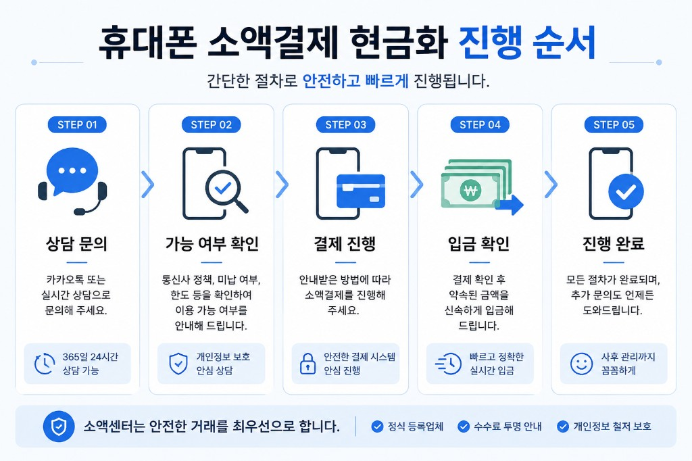
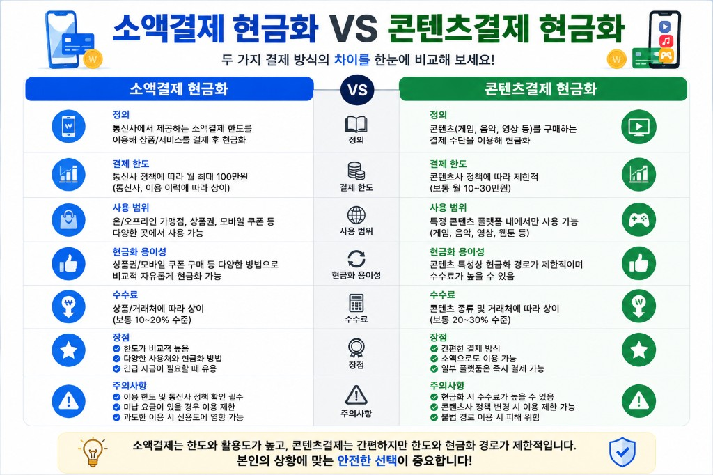
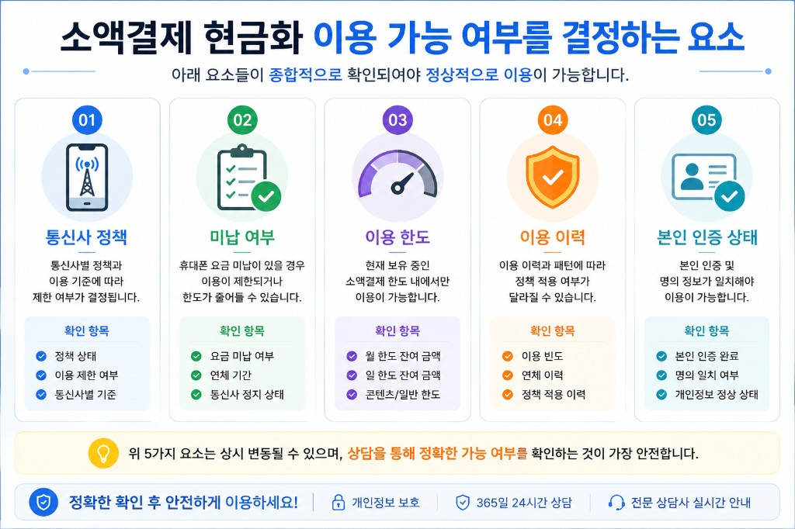
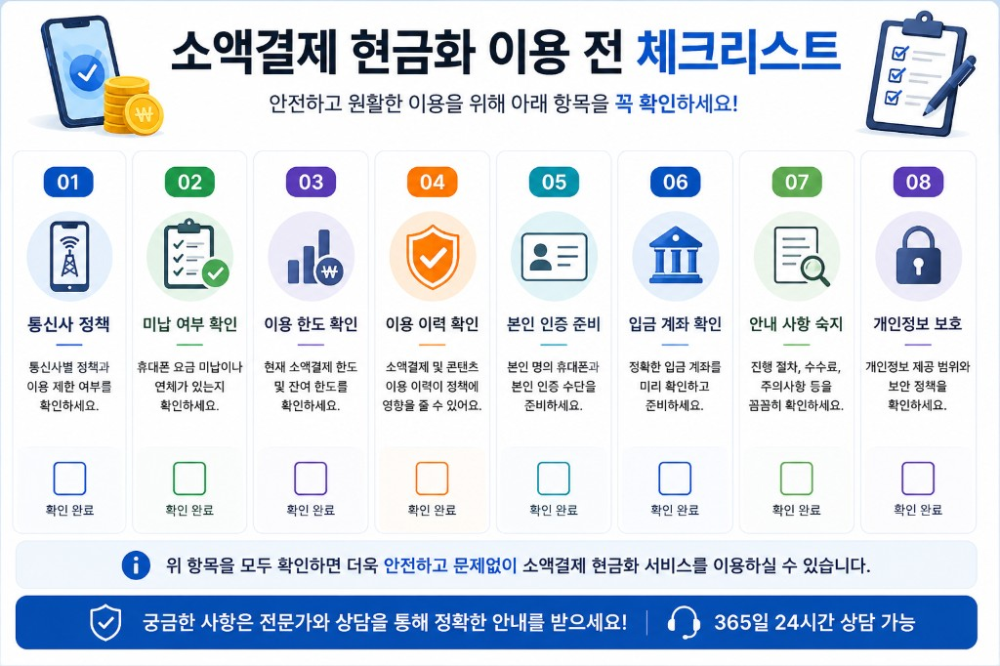

휴대폰 소액결제 현금화 종합 안내
이 페이지는 휴대폰 소액결제 현금화와 관련된 이용방법, 실제 상담사례, FAQ, 주의사항을 한 곳에서 확인할 수 있도록 정리한 허브입니다.
휴대폰 소액결제 현금화란?
휴대폰 소액결제 현금화란 무엇인가
휴대폰 소액결제 현금화는 본인 명의 휴대폰의 소액결제 한도를 활용해 정보이용료·콘텐츠이용료 등 휴대폰 결제 항목을 이용한 뒤, 정해진 절차에 따라 현금으로 전환하는 방식을 말합니다. 소액결제 현금화는 휴대폰 요금 청구와 연동되므로, 통신사 정책·소액결제 한도·미납 상태를 먼저 확인하는 것이 중요합니다.
「휴대폰 소액결제」와 「소액결제 현금화」는 비슷하게 쓰이지만, 확인 항목·승인 조건은 다를 수 있습니다. 소액센터는 이 페이지를 관련 안내의 메인 허브로 운영합니다.
아래 순서는 실제 상담 시 일반적으로 안내되는 진행 흐름입니다.

휴대폰 소액결제 현금화는 먼저 채널톡·전화 등으로 상담 문의를 접수하는 것부터 시작합니다. 상담 과정에서 통신사 정책, 미납 여부, 소액결제 한도, 이용 이력을 함께 확인해 이용 가능 여부를 안내합니다. 조건이 맞는 범위 안에서 진행 절차를 설명한 뒤, 결제·입금 확인 등 필요한 단계를 순서대로 안내합니다. 모든 절차가 끝난 후에도 추가 문의가 있으면 상담을 이어갈 수 있으며, 개인 상태에 따라 단계나 소요 시간은 달라질 수 있습니다.
휴대폰 소액결제와 콘텐츠결제(정보이용료)의 차이
두 결제 방식은 비슷해 보이지만 이용 방식에는 차이가 있습니다.

소액결제 현금화는 통신사가 제공하는 정보이용료·소액결제 한도를 활용하는 방식으로, 한도 규모와 활용 범위가 상대적으로 넓은 편입니다. 콘텐츠결제는 게임·음원·영상 등 디지털 콘텐츠 결제 한도를 사용하는 방식으로, 조회 화면·잔여 한도·승인 조건이 소액결제와 다를 수 있습니다. 수수료·이용 가능 품목·정책 적용 기준도 구분해서 보는 것이 좋으며, 한쪽만 확인한 뒤 다른 쪽과 같은 조건이라고 단정하기는 어렵습니다. 통신사·요금제·이용 이력에 따라 안내 내용은 달라질 수 있습니다.
휴대폰 소액결제는 통신사 앱에서 확인하는 정보이용료·콘텐츠이용료 등 항목별 한도를 활용하는 휴대폰 결제 전반을 가리키는 경우가 많습니다. 콘텐츠결제는 그중 콘텐츠이용료 항목으로 처리되는 결제를 말하며, 정보이용료·소액결제 한도와는 조회 화면·잔여 한도· 승인 조건이 다를 수 있습니다.
두 방식을 동일하게 보기보다 항목별 한도·이용 이력을 구분해 확인하는 것이 좋으며, 통신사·요금제에 따라 안내 내용은 달라질 수 있습니다.
이용 가능 여부가 사람마다 다른 이유
소액결제 현금화 이용 가능 여부는 한 가지 조건만으로 결정되지 않습니다. 같은 금액을 문의해도 결과가 다른 이유는 아래 요소가 함께 영향을 주기 때문입니다.
이용 가능 여부는 아래 요소를 함께 확인해야 합니다.

이용 가능 여부는 통신사 정책, 미납 여부, 소액결제 한도, 이용 이력, 본인 인증 상태가 함께 영향을 줍니다. 통신사·요금제에 따라 정책 기준이 다르고, 요금 미납이 있으면 이용이 제한될 수 있습니다. 앱에서 보이는 한도와 실제 승인 가능 금액은 별개인 경우가 있으며, 최근·과거 이용 패턴도 정책 적용에 반영될 수 있습니다. 본인 명의·인증 정보가 일치하지 않으면 진행이 어려울 수 있어, 여러 항목을 한꺼번에 점검하는 것이 좋습니다.
- 통신사 — SKT, KT, LG U+ 등 통신사·요금제·가입 유형에 따라 한도·정책 기준이 다릅니다.
- 결제사 — 실제 승인 단계에서 결제사 정책·이용 제한이 반영될 수 있습니다.
- 한도 — 소액결제 한도 잔여와 실제 승인 가능 금액은 별개일 수 있습니다.
- 미납 — 통신요금 미납·연체가 있으면 이용이 제한되거나 일부만 가능한 경우가 있습니다.
- 이용 이력 — 최근·과거 이용 패턴, 정책 적용 이력 등에 따라 달라질 수 있습니다.
한도가 남아 있어도 정책·미납·결제사 조건 때문에 진행이 어려울 수 있으며, 미납 상태에서도 일부 금액만 안내되는 사례가 있습니다. 개인의 현재 상태를 확인하지 않고 결과를 단정하기는 어렵습니다.
이용 전 확인해야 하는 사항
소액결제 이용방법을 검토하기 전에, 아래 항목을 순서대로 점검하는 것을 권장합니다.
진행 전에 아래 항목을 먼저 확인하면 보다 원활한 상담이 가능합니다.

상담 전에는 통신사 정책·미납 상태·소액결제 한도·이용 이력을 통신사 앱에서 확인해 두는 것이 좋습니다. 본인 명의 휴대폰인지, 본인 인증 수단을 준비할 수 있는지도 함께 점검하세요. 진행 절차·수수료·주의사항을 미리 읽어 두면 상담 시 필요한 질문을 정리하기 쉽습니다. 입금 계좌 정보와 개인정보 제공 범위도 사전에 확인하면 안내를 받는 데 도움이 됩니다. 항목이 겹쳐 있으면 한 가지만으로는 원인 파악이 어려울 수 있습니다.
- 본인 명의 휴대폰 여부
- 통신사 앱에서 확인하는 소액결제 한도·정책·미납 상태
- 정보이용료·콘텐츠이용료 등 항목별 잔여 한도
- 최근 결제 실패·이용 제한 문구 여부
- 신규 개통·번호이동 직후 제한 여부
여러 항목이 겹치면 한 가지만 확인해서는 원인 파악이 어려울 수 있습니다. 확인 순서와 상세 절차는 휴대폰 소액결제 이용방법과 소액결제 한도 안내에서 더 자세히 볼 수 있습니다.
상담을 먼저 받아야 하는 이유
휴대폰 소액결제 현금화는 앱에서 한도만 확인한 뒤 바로 진행하기보다, 현재 통신사· 결제사·미납·이용 이력을 함께 점검한 뒤 가능한 범위를 안내받는 방식이 더 정확합니다. 소액센터는 확인된 조건을 기준으로 설명하며, 희망 금액과 실제 승인 가능 범위가 다를 수 있음을 미리 안내합니다.
상담 없이 일반 정보만으로 결과를 단정하기는 어렵습니다. 채널톡·전화로 현재 상태를 알려주시면 확인 가능한 범위를 설명해 드립니다.
실제 상담사례를 바탕으로 한 안내
소액센터는 실제 상담 내용을 바탕으로 작성한 사례를 이 허브와 상담사례 목록에 정리하고 있습니다. 미납 상태에서 일부 금액만 진행된 사례, 한도가 남았는데도 결제가 실패한 사례, 콘텐츠결제 이용 후 추가 소액결제를 문의한 사례 등 다양한 흐름이 있으며, 같은 조건이라도 개인마다 결과는 다를 수 있습니다.
성공 사례뿐 아니라 진행이 어려웠거나 일부만 가능했던 상담도 함께 공개하며, 확인된 범위를 전달하는 것이 기본 방향입니다.
FAQ와 이용가이드에서 더 확인하기
자주 묻는 질문은 소액결제 FAQ에서, 순서대로 읽고 싶다면 휴대폰 소액결제 이용가이드에서 확인할 수 있습니다. 이 허브 하단 「많이 찾는 질문」에서 대표 문항으로도 이동할 수 있습니다.
이용방법 보기 · FAQ 보기 · 실제 상담사례 보기
자세히 보기 (준비중)
이용방법
상담을 통해 진행하는 기본 흐름입니다. 개인 상태에 따라 단계·결과는 달라질 수 있습니다.
-
1
이용 가능 여부 확인
한도·정책·미납 상태 점검
-
2
상담 진행
채널톡·전화 상담
-
3
진행 방법 안내
확인된 범위 안내
-
4
완료
상담·안내 종료
자주 찾는 정보
현금화와 관련해 자주 찾는 안내를 카테고리별로 모았습니다.
실제 상담사례
실제 상담 내용을 바탕으로 작성된 사례입니다. 개인정보는 익명 처리했습니다.
많이 찾는 질문
휴대폰 소액결제는 어떻게 이용하나요?
본인 명의 휴대폰에서 통신사 앱으로 한도·정책·미납 상태를 확인한 뒤 이용 절차를 진행합니다. 통신사·요금제에 따라 조건이 다를 수 있습니다.
소액결제 한도는 어디서 확인하나요?
T world, 마이케이티, 유플러스 앱에서 정보이용료·콘텐츠이용료 등 항목별 잔여 한도를 확인할 수 있습니다.
통신요금 미납이 있으면 소액결제가 안 되나요?
미납·연체가 있으면 이용이 제한되거나 정책이 적용되는 경우가 많습니다. 미납 금액·기간에 따라 결과는 달라질 수 있습니다.
미납인데도 소액결제가 되는 경우가 있나요?
조건에 따라 일부 금액만 승인되는 경우도 있습니다. 무조건 가능하다고 단정하기는 어렵습니다.
소액센터 상담은 어떻게 신청하나요?
메인 페이지의 실시간 상담 버튼을 누르면 연락처 안내 모달이 열립니다. 현재 상태를 확인한 뒤 가능한 범위를 안내해 드립니다.
이용 시 주의사항
- 이용 가능 여부는 개인마다 다를 수 있습니다.
- 통신사 정책에 따라 결과가 달라질 수 있습니다.
- 결제사 정책에 따라 승인 여부가 달라질 수 있습니다.
- 현재 상태 확인 후 안내받는 것이 가장 정확합니다.
자세한 주의사항은 소액결제 이용 시 주의사항에서 확인할 수 있습니다.